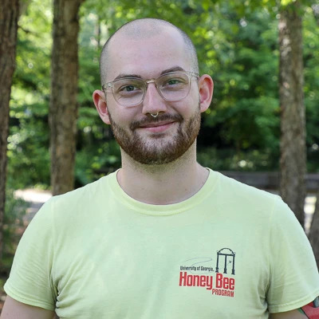
Lewis Bartlett
University of Georgia
Center for the Ecology of Infectious Diseases
Postdoctoral Associate
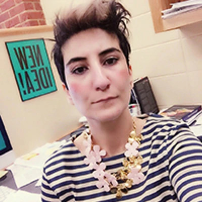
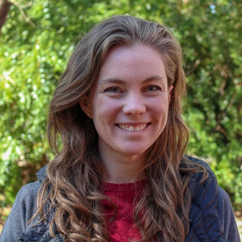
Tommy Bui
University of Georgia
Franklin College
Volunteer Research Assistant
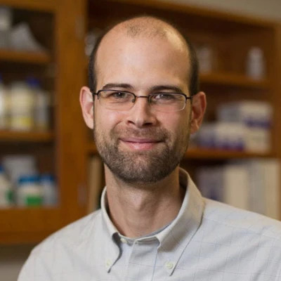
John Drake
University of Georgia
Center for the Ecology of Infectious Diseases
Director
Odum School of Ecology
Distinguished Research Professor and Associate Dean for Academic Affairs
Sam Fahmy
University of Georgia
Office of the Senior Vice President for Academic Affairs and Provost
Director of Public Relations for Academic Affairs
Yang Ge
University of Georgia
College of Public Health
Epidemiology & Biostatistics
Doctor of Philosophy (PhD) in Epidemiology & Biostatistics
Andreas Handel
University of Georgia
College of Public Health
Epidemiology & Biostatistics, Health Informatics Institute
Associate Department Head and Graduate Coordinator
Associate
Professor
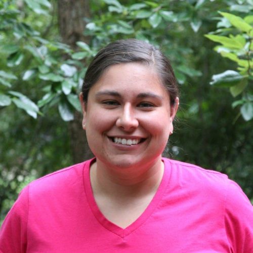
Culzean Kennedy
University of Georgia
MS in Comparative Biomedical Sciences
Scientific Writing Intern
John King
University of Georgia
Center for the Ecology of Infectious Diseases
Project & Communications Manager, Coronavirus Working Group
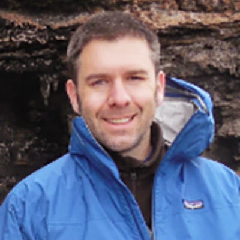
Drew Kramer
University of South Florida
Department of Integrative Biology
Assistant Professor
Erin Lipp
University of Georgia
College of Public Health
Professor and Associate Dean for Academic Affairs
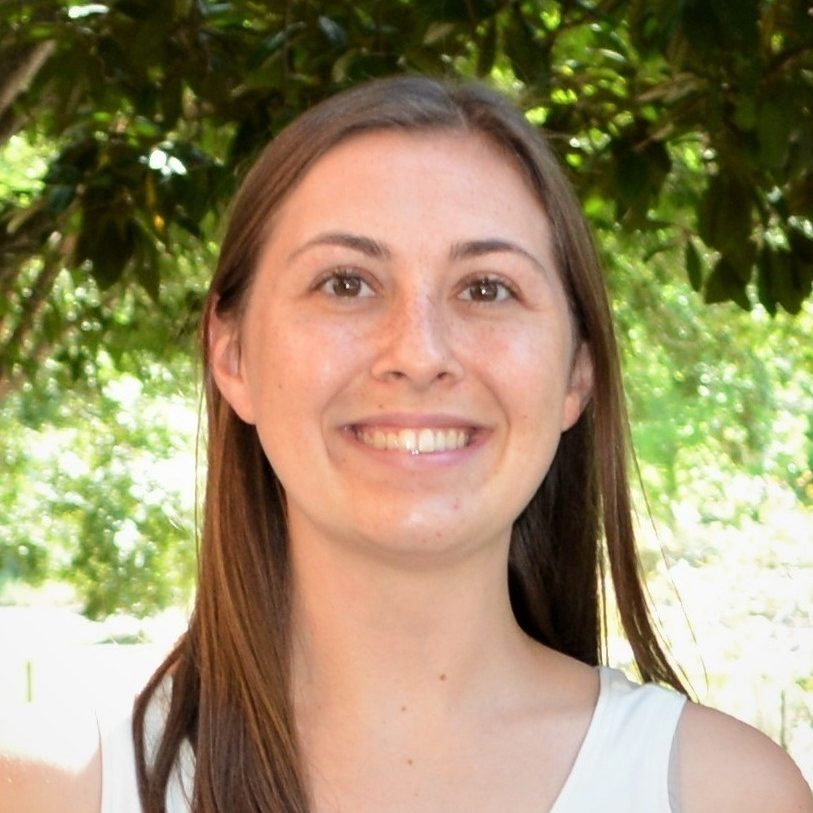

Éric Marty
University of Georgia
Center for the Ecology of Infectious Diseases
Research Professional
Brian McKay
University of Georgia
College of Public Health
Epidemiology & Biostatistics
Lecturer
Rachel Mercaldo
University of Georgia
College of Public Health
Epidemiology & Biostatistics
PhD Student
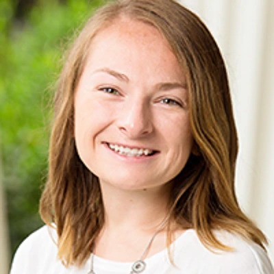
William Norfolk
University of Georgia
College of Public Health
Environmental Health Science
PhD Student
Eamon O’Dea
University of Georgia
Center for the Ecology of Infectious Diseases
Postdoctoral Associate
Tierney O’Sullivan
University of Georgia
Center for the Ecology of Infectious Diseases
Staff Statistician
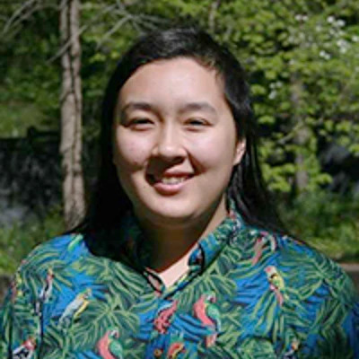
Chloe Parker
University of Georgia
Center for the Ecology of Infectious Diseases
Graphic Design Intern
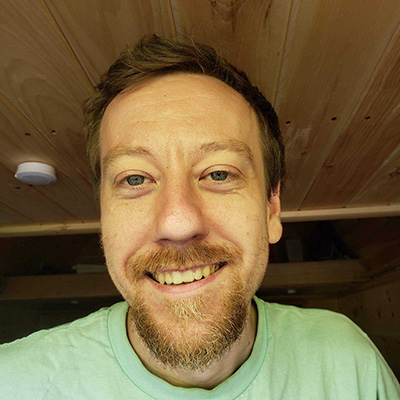
Trippe Ross
University of Georgia
Center for the Ecology of Infectious Diseases
Administrative Specialist & Graduate Student (MPA)
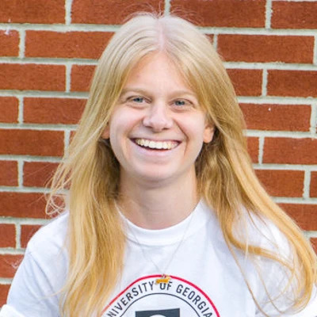
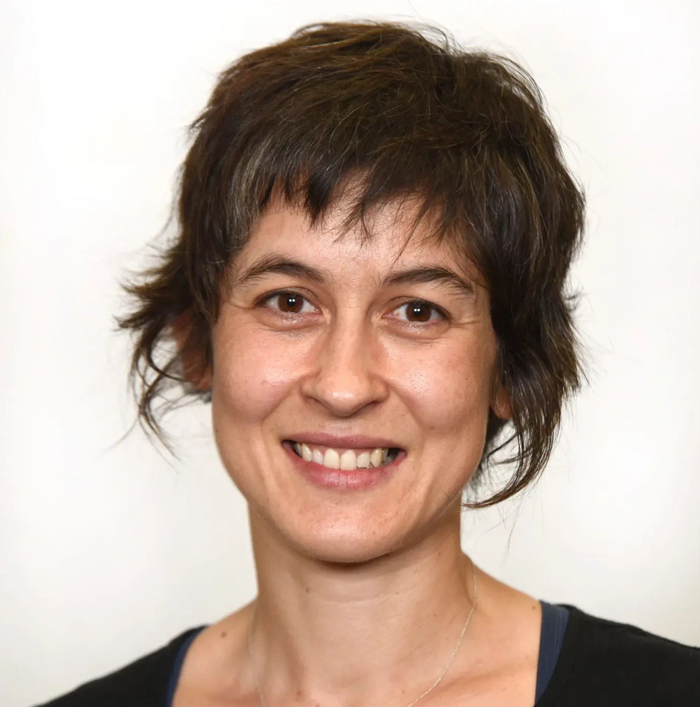
Liliana Salvador
University of Georgia
College of Veterinary Medicine
Department of Infectious Diseases & Institute of Bioinformatics
Assistant Professor

Cecilia Sánchez
University of Georgia
Center for the Ecology of Infectious Diseases
Postdoctoral Associate
Olivia Thomas
University of Georgia
Franklin College of Arts & Sciences
Undergraduate Researcher
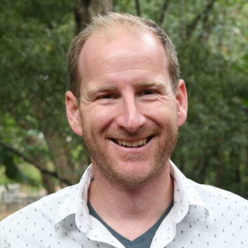
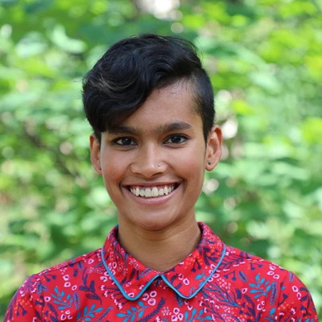
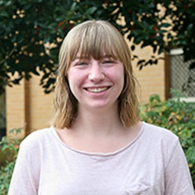
Jessica Wenclawiak
University of Georgia
Center for the Ecology of Infectious Diseases
Scientific Writing Intern